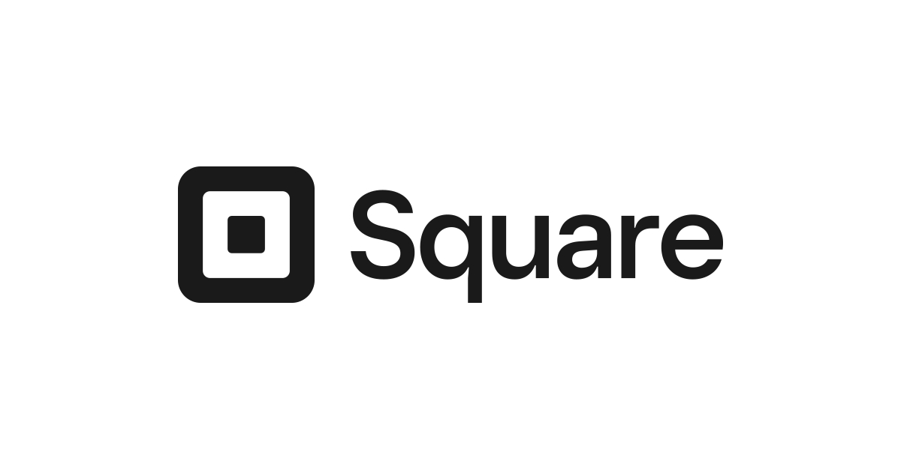
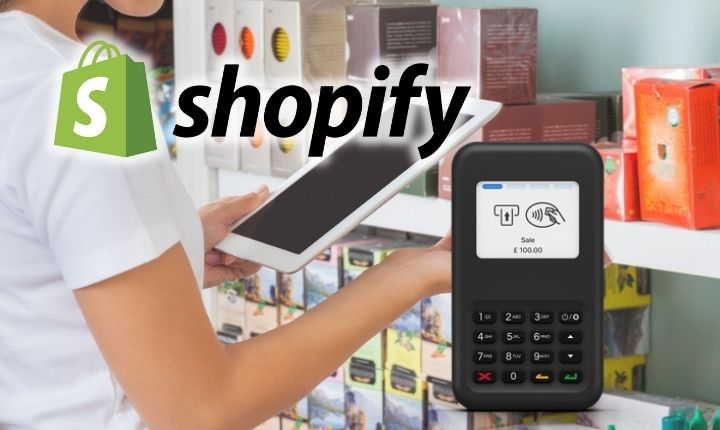
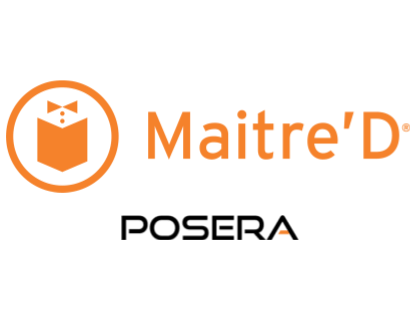

¿Qué es un software de pago?
Un software de pago en tu sistema de Punto de Venta (TPV) se refiere a un programa o aplicación que requiere un costo monetario para poder ser utilizado. Este tipo de software proporciona funciones adicionales y mejoras en comparación con las opciones gratuitas. Pueden incluir características avanzadas de gestión de inventario, reportes detallados, integración con otros sistemas y soporte técnico. Los software de pago suelen ofrecer una mayor fiabilidad y seguridad en el procesamiento de pagos, brindando una experiencia más profesional y confiable en tu TPV.

¿Cuál es el sentido usar un software de pago y no libre?
El sentido de utilizar un software de pago en lugar de uno libre radica en varias ventajas:
- Los programas de pago suelen ser más completos y contar con características avanzadas que satisfacen necesidades específicas.
- Al ser pagados, suelen recibir actualizaciones y soporte técnico de calidad, lo que garantiza un funcionamiento estable y seguro.
- El software de pago suele tener una interfaz más intuitiva y un mejor diseño, lo que facilita su utilización.
- Al ser productos comerciales, ofrecen garantías legales que protegen al usuario en caso de problemas o conflictos.

¿Cuales son los software más utilizados en el mercado?
Existen bastantes software de pago utilizados para el TPV, principalmente son usados:
-
Square Point of Sale
Es utilizado por muchos negocios debido a su facilidad de uso y a la gran cantidad de funciones que ofrece, como la gestión de inventario y la creación de reportes detallados.
 -
Lightspeed Retail
Destaca por ser muy completo y versátil. Permite gestionar ventas, inventarios, analizar datos y ofrece la opción de integrarse con diferentes plataformas, como eCommerce y sistemas de fidelización de clientes.
Web oficial de Lightspeed
-
Epos Now
Este software es líder en el mercado y ofrece soluciones completas de punto de venta para negocios de diferentes sectores. Permite gestionar ventas, inventarios, informes y cuenta con integración con otros sistemas.
-
Shopify POS
Ampliamente utilizado en el mercado. Además de las funciones básicas como ventas y gestión de inventario, ofrece herramientas de análisis de datos y personalización del punto de venta. También permite integrarse con tiendas en línea creadas con Shopify.
 -
Maitre'D
Una solución de TPV muy utilizada en la industria de la hospitalidad, como restaurantes y bares. Este software ofrece funcionalidades específicas para este tipo de negocios, como la gestión de mesas, comandas y opciones de pago personalizadas.

¿Cuanto dinero debo invertir en ellos?
Todo depende del sistema que estemos interesados.
A continuación, voy a comparar las diversas opciones.
- Square Point of Sale Ofrece una variedad de planes y opciones de precios. La versión básica del software es gratuita, pero si deseas acceder a funciones adicionales como inventario, informes avanzados y gestión de empleados, puedes optar por el Plan Profesional que tiene un precio de 49€ al mes.
- Lightspeed Retail Cuenta con diferentes planes de precios con funcionalidades específicas para distintos tipos de comercios. El precio mensual para una licencia básica comienza en 89€ al mes. Si deseas una licencia adicional para un segundo punto de venta, el costo adicional es de 59€ al mes.
- Epos Now Ofrece planes de precios personalizados en los que debes contactar directamente con ellos para obtener una cotización precisa en función de tus necesidades. Sin embargo, se estima que el costo mensual puede variar entre los 29€ y 79€ (dependiendo de los módulos y características que requieras).
- Shopify POS Ofrece varios planes de precios, pero para utilizar su software TPV debes tener contratado un plan de comercio electrónico en Shopify. Los planes básicos comienzan en 29€ al mes, pero para acceder a funciones de punto de venta físico, deberás suscribirte al Plan Shopify por 79€ al mes.
- Maitre'D Ofrece cotizaciones personalizadas, por lo que es necesario comunicarse directamente con ellos para obtener una estimación precisa en función de tus necesidades. Se estima que los precios de la licencia básica podrían oscilar entre los 69€ y 99€ al mes, dependiendo de las características específicas requeridas.
En conclusión, los precios de los software TPV varían dependiendo de las funcionalidades requeridas y la opción de licencia o suscripción. Es importante tener en cuenta que estos precios son aproximados y pueden cambiar con el tiempo. Recuerda verificar siempre la información actualizada en los sitios web oficiales de cada proveedor antes de tomar una decisión de compra.